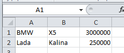
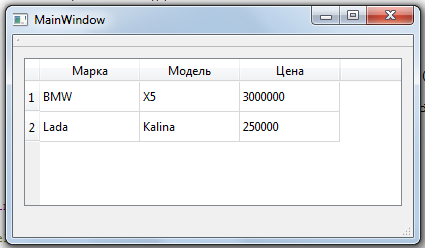

Qt/C++ - Урок 054. Считывание данных из файла CSV и их представление через QStandardItemModel
CSV, QStandardItemModel, Qt, QTableView
Формат данных CSV ( Comma-Separated Values — значения, разделённые запятыми), является простейшим форматом представления табличных данных. Данный формат поддерживается Excel и многими другими офисными пакетами. Например, я часто сталкиваюсь с данным форматом, когда делаю выгрузку статистики по сайту из панели вебмастера Google Search Console.
В данном формате таблица представляется последовательностью данных, которые разделены запятыми, и представляют собой колонки, а строки разделяются переводом строки. В случае с русифицированным Microsoft Excel данные разделяются точкой с запятой и будут выглядеть следующим образом:
- BMW;X5;3000000
- Lada;Kalina;250000
Разбор CSV
Таким образом вся задача сводится к построчному считыванию данных из файла и добавления этих данных модель представления данных, которая будет помещена в QTableView .
Возьмём за основу выше приведённый пример содержимого CSV файла, который был создан в Microsoft Excel:

И отобразим его в QTableView через QStandardItemModel:

mainwindow.h
Внешний вид приложения был создан в графическом дизайнере, поэтому к QTableView обращение идёт через объект ui.
- #ifndef MAINWINDOW_H
- #define MAINWINDOW_H
-
- #include <QMainWindow>
- #include <QStandardItemModel>
-
- namespace Ui {
- class MainWindow;
- }
-
- class MainWindow : public QMainWindow
- {
- Q_OBJECT
-
- public:
- explicit MainWindow(QWidget *parent = 0);
- ~MainWindow();
-
- private:
- Ui::MainWindow *ui;
- QStandardItemModel *csvModel; // Объявим указатель на модель данных, которая
- // будет содержать данные из CSV файла
- };
-
- #endif // MAINWINDOW_H
mainwindow.cpp
Файл CSV в данном примере помещён в файл ресурсов проекта, если Вам требуется указать иной файл, то соответственно потребуется переписать путь к данном файлу. Результат будет соответствовать тому, что показан был на скриншоте выше.
- #include "mainwindow.h"
- #include "ui_mainwindow.h"
- #include <QFile>
- #include <QTextStream>
- #include <QDebug>
-
- MainWindow::MainWindow(QWidget *parent) :
- QMainWindow(parent),
- ui(new Ui::MainWindow)
- {
- ui->setupUi(this);
- // Создаём модель данных для отображения таблицы из CSV файла
- csvModel = new QStandardItemModel(this);
- csvModel->setColumnCount(3);
- csvModel->setHorizontalHeaderLabels(QStringList() << "Марка" << "Модель" << "Цена");
- ui->tableView->setModel(csvModel); // Устанавливаем модель в таблицу
-
- // Открываем файл из ресурсов. Вместо данного файла
- // необходимо указывать путь к вашему требуемому файлу
- QFile file(":/exampleTable.csv");
- if ( !file.open(QFile::ReadOnly | QFile::Text) ) {
- qDebug() << "File not exists";
- } else {
- // Создаём поток для извлечения данных из файла
- QTextStream in(&file);
- // Считываем данные до конца файла
- while (!in.atEnd())
- {
- // ... построчно
- QString line = in.readLine();
- // Добавляем в модель по строке с элементами
- QList<QStandardItem *> standardItemsList;
- // учитываем, что строка разделяется точкой с запятой на колонки
- for (QString item : line.split(";")) {
- standardItemsList.append(new QStandardItem(item));
- }
- csvModel->insertRow(csvModel->rowCount(), standardItemsList);
- }
- file.close();
- }
- }
-
- MainWindow::~MainWindow()
- {
- delete ui;
- delete csvModel;
- }
Скачать архив с примером csv и QStandardItemModel